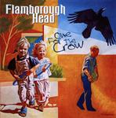

| Artist: | Flamborough Head |
| Title: | One For The Crow |
| Label: | Cyclops CYCL 108 |
| Length(s): | 58 minutes |
| Year(s) of release: | 2002 |
| Month of review: | [09/2002] |
| 1) | One For The Crow | 12.00 |
| 2) | Old Shoes | 13.13 |
| 3) | Separate | 1.39 |
| 4) | Daydreams | 6.18 |
| 5) | Nightlife | 10.06 |
| 6) | Old Forest | 2.45 |
| 7) | Limestone Rock | 9.59 |
| 8) | New Shoes | 2.14 |
Old Shoes has a slow start with fluting keyboards and a bit of mellotron as well, in the back the guitar also takes its time. A bit of an easy going feel pervades this track. There is quite a bit of Genesis in the piano, but the comparison stops at the vocal parts. This is a very tranquil part which reminded me of John Denver, hmm. Instrumentally, the band travels a rather safe road, reference being the, for Dutch bands, standard Genesis one (listen to percolating piano part). The guitar solo is a good one, in a very melodic bluesy style, while also the organ ought not to be forgotten. Abruptly we break into something more progressive. Here, the drums lack in freshness, all in all a bit too monotonous, where more could have been made of it. Plenty of melodic guitar and keyboards bits all intertwine in the middle instrumental section, being typical for symphonic rock. The vocal part is a bit too simple for my tastes, at least the larger part of it. We get a break into something else again as the recorder sets in (recorded rather nakedly), and the music gets a bit more drive, but not at once. A bit of folk and dance here, but with a sublty tense undercurrent.
Separate is a nice acoustic ditty on guitar, with some recorder as well. Daydreams is yet another instrumental, this time with synths added to the melodious flute and strumming acoustic guitar. A rather sad theme this. This is a typically lush instrumental in the style of Camel, more so when the guitar starts. The wind instruments add a bit of folk to the feel at times. Edo Spanninga then takes over with piano, some mellotron, revisiting the sad opening mood and something akin to the theme of the first track. Playfulness returns to the music with the recorder and the acoustic guitar. This does not really fit in well with the previous. Pace returns for a somewhat Flairck oriented passage with some Focus type guitar.
Nightlife is not one of the better tracks of the album. Whether it is the monotonous flat drumming, or the lack of appeal in the vocal melody, I do not really know. The song does contain a lot of lyrics and is very neo sounding. After the vocal part we get flute and piano quite abruptly and not really in a very meaningful way. The guitar lines remind me of Focus, slow, melodic, thoughtful even. Do I hear some cello here? The theme on flute is nice again.
Old Forest is an instrumental again, to form as a separating entity between the longer tracks. Classical guitar, recorder make for yet another melodic interlude. Notwithstanding, they are only the cement, not the brick of which an album is to be made.
Limestone Rock is the final song on the album. The opening synths are very IQish bringing back the sound of It All Stops Here, but without the drive. The guitar line first reminds me of King Crimson's Epitaph, but starts to diverge a bit later. A slow bluesy guitar evokes a Floydian feel, for quite a while in fact.
New Shoes is a reprise of Old Shoes, and includes a rather fast acoustic guitar tune as well, called Pure.